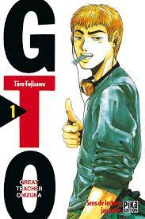
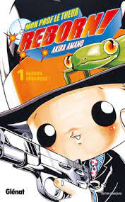
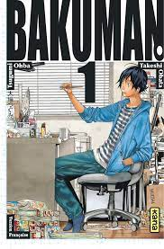
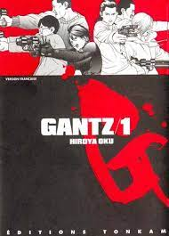
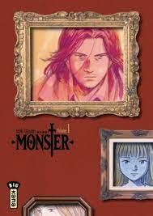
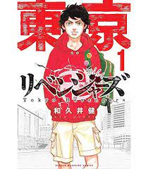
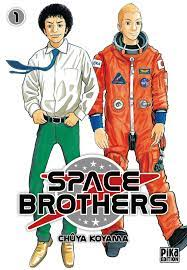
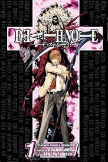
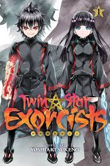
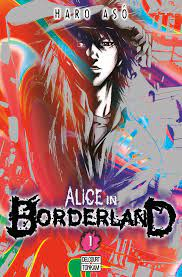

| numéro | Nom | Auteurs | Date de parution | Style | Image |
|---|---|---|---|---|---|
| 1 | GTO | Toru Fujisawa | 1997 | Shonen |  |
| 2 | Reborn | Akira Amano | 2004 |  | |
| 3 | Bakuman | Takeshi Obata | 2008 |  | |
| Tsugumi Oba | |||||
| 4 | Gantz | Hiroya Oku | 2000 | Seinen |  |
| 5 | Monster | Naoki Urasawa | 1994 |  | |
| 6 | Tokyo Revengers | Ken Wakui | 2017 | Shonen |  |
| 7 | Space Brothers | Chuya Koyama | 2007 | Seinen |  |
| 8 | Death Note | Takeshi Obata | 2004 | Shonen |  |
| Tsugumi Oba | |||||
| 9 | Twin Star Exorcists | Yoshiaki Sukeno | 2013 |  | |
| 10 | Alice In Borderland | Haro Aso | 2010 |  |